Specify Data Source Settings (Database)
This page appears if you selected Database on the start page.
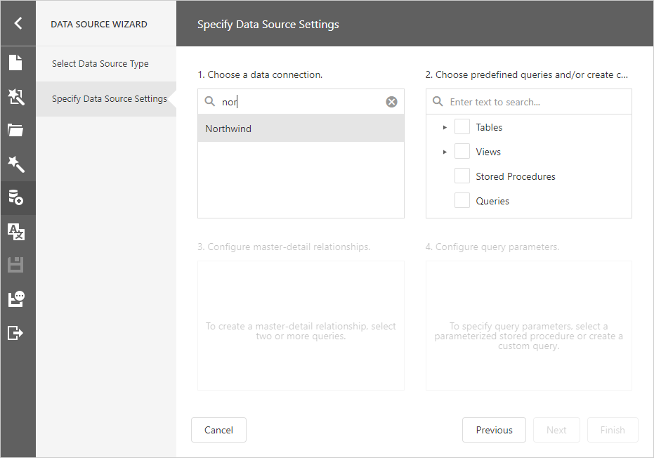
Choose a Data Connection
Select a data connection from the list.
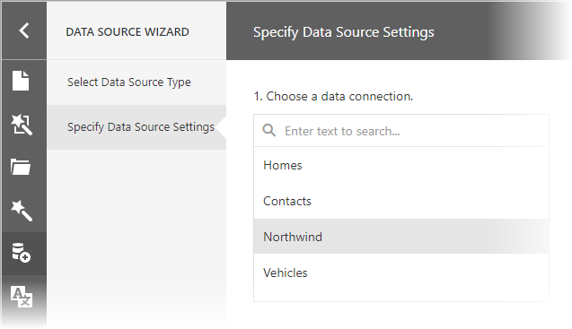
Choose Queries
Check tables, views and/or stored procedures to include them in a data source as separated queries.
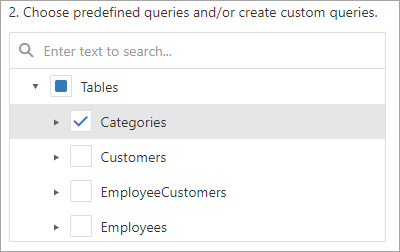
You can also check specific data fields.
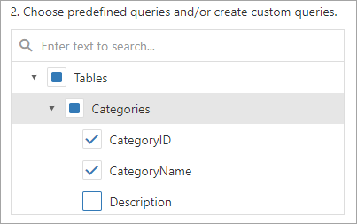
To join multiple data tables and shape the resulting data, click the Queries category's plus button to invoke the Query Builder and create a custom query.
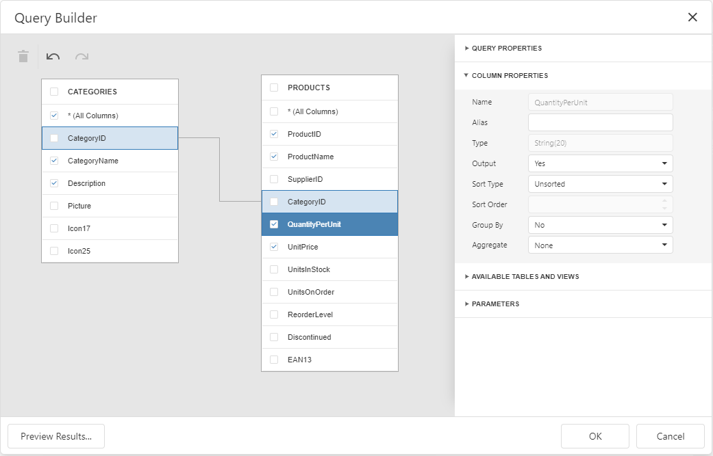
If you enabled custom SQL queries, the plus button invokes a context menu. You can choose whether to run the Query Builder or Custom SQL Editor.
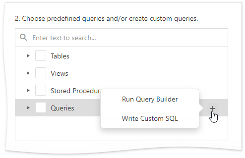
You can click the  button to customize the query or the button to remove the query.
button to customize the query or the button to remove the query.
Once you finished the wizard, the data source becomes available in the Report Explorer's Data Sources node. The Field List reflects the data source structure.
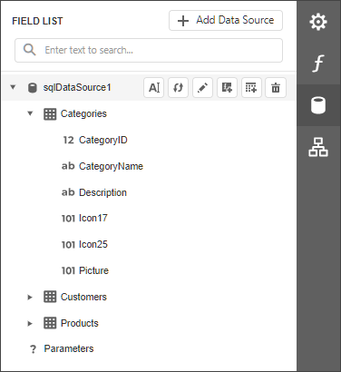
Configure Master-Detail Relationships
This step is available when you selected several tables or queries.
To create a master-detail relationship, hover the master table name, click the plus button and choose the detail table.
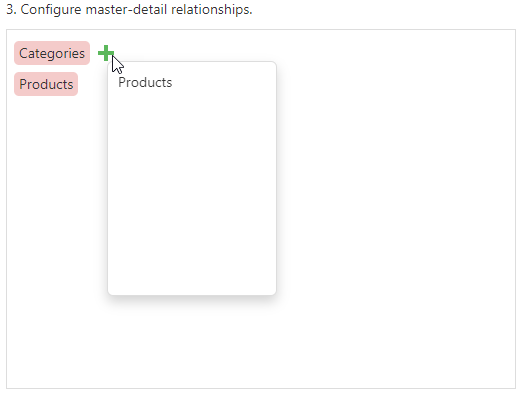
Select the required key fields (columns) to connect tables.
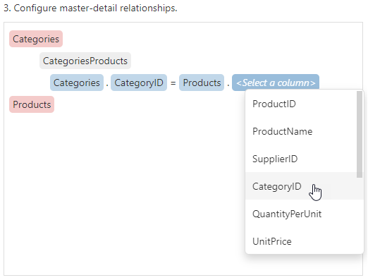
Click OK to close the Master-Detail Relation Editor.
After the wizard is completed, the Field List reflects the master-detail hierarchy.
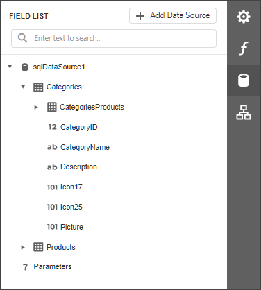
Configure Query Parameters
This step is available if you selected a parameterized stored procedure or created a custom query.
Select a query and click the plus button to add a new parameter.
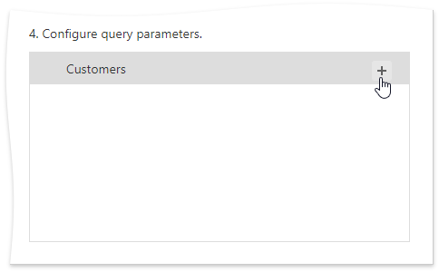
Click the button to customize the parameter or the button to remove it.
You can use the following approaches to specify a parameter value:
Assign a static value
Select a query parameter's type from the Type drop-down list and specify a value based on the selected type.
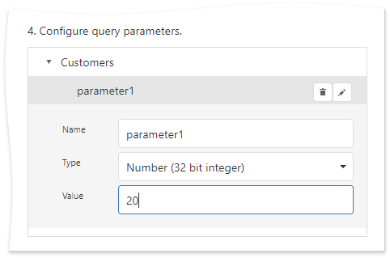
Provide a dynamic parameter value
Set the Type option to Expression and specify the Result Type. Click the Value option's ellipsis button and construct an expression in the invoked.

If you design the current report in the wizard, you can map a query parameter to an existing report parameter. To do this, use the ?parameterName syntax.
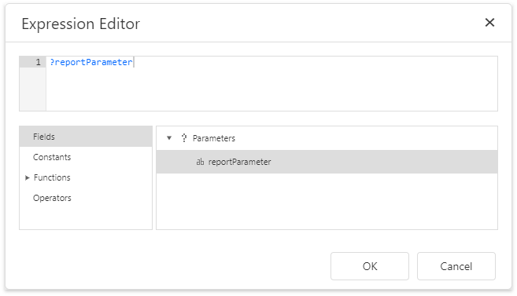